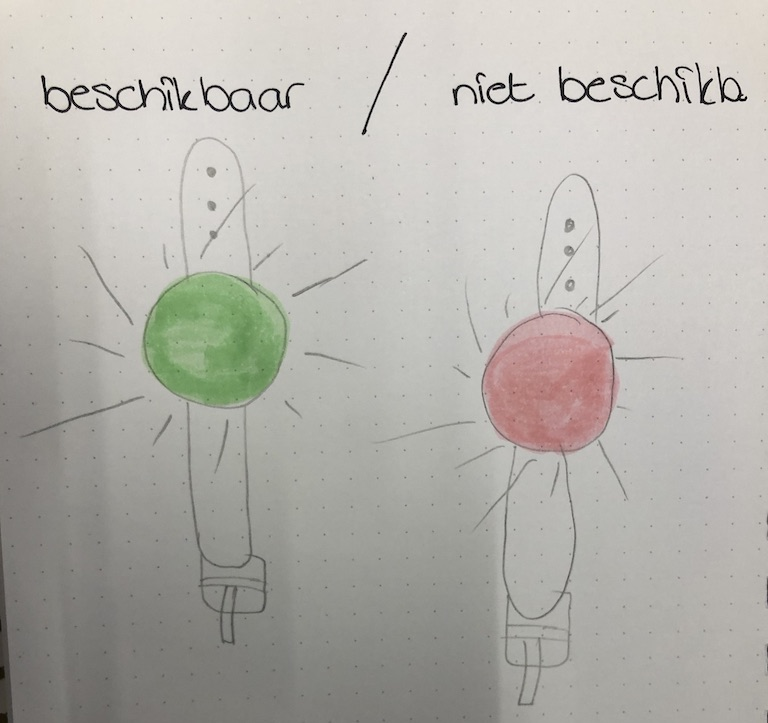

Wearables zijn elektronische apparaten die je kunt dragen, meestal hebben deze wearables een bepaald doel wat ze willen bereiken. Zelden komt het voor dat het wordt gedragen, omdat het "mooi" is. Een voorbeeld hiervan is de iWatch die Apple uit heeft gebracht. Het is een horloge, maar hij doet meer dan het aanwijzen van het tijdstip. Het kan je hartslag meten, je stappen tellen en nog veel meer! Bijna alles wat je met de mobiele telefoon kunt doen eigenlijk.
De doeleinden van wearables kunnen enorm verschillen. De ene keer maakt het iets in je leven makkelijker en de andere keer heeft het een toegevoegde waarde aan je gezondeid. Het heeft in ieder geval altijd een doel, of het nou zo nodig is of niet.

Zelf vind ik het altijd moeilijk om in te schatten of iemand tijd voor mij heeft of niet. Hierom loop ik soms belangrijke informatie mis, want eigenlijk wil ik een vraag stellen. Deze durf ik dan meestal niet te stellen, omdat ik denk dat ik de persoon ik kwestie lastig zou kunnen vallen. Hiervoor zou er een oplossing kunnen zijn en deze heb ik bedacht!
De oplossing zou een wearable kunnen zijn die laat zien of jij beschikbaar bent of niet. De signalen die je hersenen afgeven, wanneer je bezig bent verschijnen op deze wearable. Zodra jij hard bezig bent aan iets belangrijks, komt er een rood signaal te staan op jouw wearable. Wanneer jij je wat meer ontspannen voelt en niet ergens druk mee bezig, krijgt de wearable een groene kleur. Zo hoef jij geen mensen af te wijzen en valt niemand je lastig wanneer je net in je workflow zit.
Je bent niet verplicht om de wearable boven je kleding te dragen, je kan het overal dragen waar je wilt. Als het maar zichtbaar is voor de medemens en als het licht er maar een beetje door zichtbaar is. Zo verpest het ook je outfit niet!
Een mooi voorbeeld, wat veel toevoegt aan de samenleving vind ik de iWatch en de soortgelijke hoorloges. Vooral in de sportwereld worden dit soort gadgets enorm gewardeerd. Het houdt op een wijze waarop jij niets merkt jouw beweging bij, vertelt je wanneer je weer even moet bewegen en houdt zelfs je slaapritme in de gaten. Dit zijn maar een paar voordelen van de iWatch van Apple.
Zelf zou ik er ook graag een aan willen schaffen, maar de prijs ligt boven mijn budget. Wel kan ik erover zeggen, dat het iedere cent waard is.
Zelf vind ik wearables leuk, zolang ze maar op de huid blijven. Er zijn namelijk ook wearables die je onder je huid kunt dragen. Zoals bijvoorbeeld je OV-Chipkaart onder je huid. Dit vind ik persoonlijk te ver gaan en ik ben ook bang dat het alleen maar erger gaat worden in de toekomst. Men probeert namelijk alles steeds makkelijker te maken, door gebruik te maken van technologie. Soms weten zij helaas niet hoe ver zij wel of niet kunnen gaan en kunnen zij zichzelf pijn doen, of hun gezondheid beïnvloeden door middel van de technologieën die zij gebruiken.
Het onderwerp interesseert mij sowieso al en het kan je leven echt makkelijker maken. Zo lang je het maar met mate toevoegt aan je leven. Helaas ben ik wel een beetje angstig over de toekomst van wearables. Mensen passen hun lichaam steeds meer aan en voegen steeds meer dingen toe. Het lijkt net een wedstrijd geworden, "Wie het meest aan zichzelf heeft laten doen".